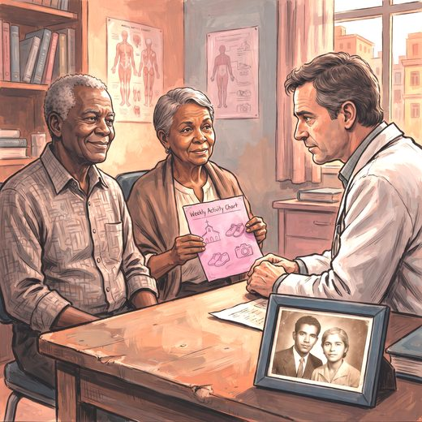

Consulta rápida à beira do leito
Condutas, doses e interações.
Referências da aula · 7
- Woods B, Rai HK, Elliott E, et al. Cognitive stimulation to improve cognitive functioning in people with dementia. Cochrane Database Syst Rev. 2023;1:CD005562. PMID 39804128. doi:10.1002/14651858.CD005562.pub3.PubMedDOI
- Lamb SE, Sheehan B, Atherton N, et al. Dementia And Physical Activity (DAPA) trial of moderate to high intensity exercise training for people with dementia: randomised controlled trial. BMJ. 2018;361:k1675. PMID 29769247. doi:10.1136/bmj.k1675.PubMedDOI
- Graff MJL, Vernooij-Dassen MJM, Thijssen M, et al. Community based occupational therapy for patients with dementia and their care givers: randomised controlled trial. BMJ. 2006;333(7580):1196. PMID 17114212. doi:10.1136/bmj.39001.688843.BE.PubMedDOI
- Livingston G, Huntley J, Liu KY, Costafreda SG, Selbæk G, Alladi S, et al. Dementia prevention, intervention, and care: 2024 report of the Lancet standing Commission. Lancet. 2024;404(10452):572-628. PMID 39096926. doi:10.1016/S0140-6736(24)01296-0.PubMedDOI
- Serrano-Pozo A, Escott-Price V, Grinberg LT, Pascoal T, Suárez-Calvet M, Dubois B, et al. Alzheimer's disease. Lancet. 2026;407:2241-62. PMID 42208565. doi:10.1016/S0140-6736(26)00198-4.PubMedDOI
- 2023 American Geriatrics Society Beers Criteria® Update Expert Panel. American Geriatrics Society 2023 updated AGS Beers Criteria® for potentially inappropriate medication use in older adults. J Am Geriatr Soc. 2023;71(7):2052-81. PMID 37139824. doi:10.1111/jgs.18372.PubMedDOI
- Vale FAC, Corrêa Neto Y, Bertolucci PHF, et al. Treatment of Alzheimer's disease in Brazil: I. Cognitive disorders. Dement Neuropsychol. 2011;5(3):178-88. PMID 29213742. doi:10.1590/S1980-57642011DN05030005.PubMedDOI
Documentos oficiais
Leis e publicações do Ministério da Saúde sobre o cuidado da pessoa idosa, de acesso livre.
Abrir os documentos